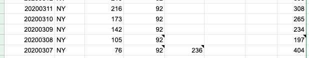
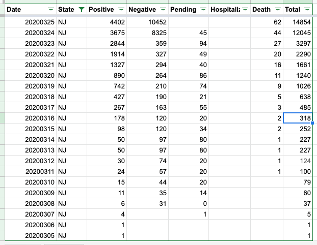
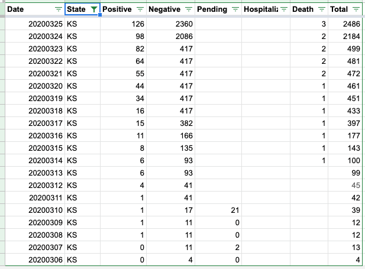
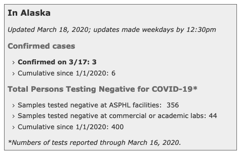
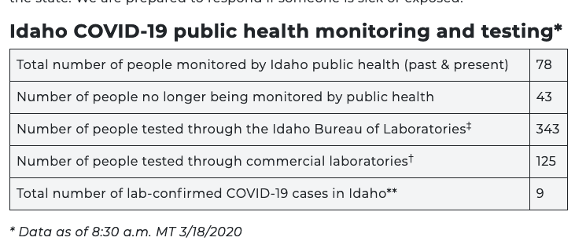
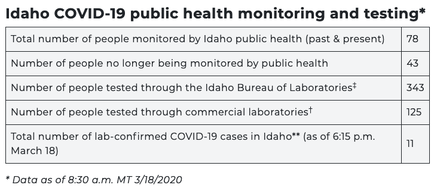

#1099: [ID] Patch typo in 02/12 cases
Issue number 1099
hmhoffman opened this issue on February 12, 2021, 4:19 PM PST
State: ID
Dates affected: 02/12/21
Describe the issue: On February 12, 2021, we had an error in Idaho's Cases (confirmed + probable).
Comments
#1099: [ID] Patch typo in 02/12 cases
Issue number 1099
hmhoffman opened this issue on February 12, 2021, 4:19 PM PST
State: ID
Dates affected: 02/12/21
Describe the issue: On February 12, 2021, we had an error in Idaho's Cases (confirmed + probable).
Comments
Rows edited: 1 ID 2021-02-12 positive: 166876 (was 168876)
#1006: [CO] Deaths due to COVID vs. deaths among cases source switch
Issue number 1006
karaschechtman opened this issue on December 11, 2020, 10:34 AM PST
Labels Data quality
State or US: CO
Describe the problem Colorado's deaths due to COVID-19 metric is lagging its deaths among cases metric. On September 1, there was only 97 difference: 1946 deaths among cases, vs. 1849 deaths due to COVID. On December 11, there is a 759 difference—3759 deaths among cases, as opposed to 3005 deaths due to COVID. This means 20% of deaths among cases do not have death certificate data, vs. 5% in September, indicating a lag.
Link to data source https://covidtracking.com/data/state/colorado/screenshots CO's raw data files for confirmed/probable death breakdowns: https://www.arcgis.com/home/webmap/viewer.html?url=https://services3.arcgis.com/66aUo8zsujfVXRIT/ArcGIS/rest/services/colorado_covid19_daily_state_statistics_cumulative/FeatureServer&source=sd

Comments
We are adding the breakdown for confirmed/probable from 5/15 onward because before then they were not reported on the website and do not sum CO after.txt CO Before.txt
#988: [ND] Backfill Deaths (Confirmed and Probable), Deaths (Confirmed) to reflect all deaths rather than deaths due to COVID
Issue number 988
muamichali opened this issue on December 1, 2020, 11:19 AM PST
Labels Data quality
State or US: North Dakota
Describe the problem Over the past week, a gap has opened between the number of COVID-19 deaths North Dakota's health department reports and The COVID Tracking Project’s counts of deaths in the state. On November 30, North Dakota’s health department dashboard reported 927 cumulative COVID-19 deaths, but The COVID Tracking Project recorded 680. This is because we track deaths due to COVID, instead of deaths among cases in the state.
It’s clear that a reporting backlog is to blame for most of the widening discrepancy between figures: The share of COVID-19-positive individuals who died in North Dakota with death certificates still pending has doubled since the beginning of November. To better reflect the reality of rising deaths in North Dakota, we are changing our method for counting deaths in the state to the other main paradigm for tracking deaths: counting deaths among cases.
Link to data source https://covidtracking.com/data/state/north-dakota/screenshots
Comments
[ ND.xlsx ](url)
#911: [ID] Patch 10/21 Timestamp
Issue number 911
hmhoffman opened this issue on October 23, 2020, 10:58 AM PDT
Labels Data quality
State: ID
Dates affected: 10/21
Describe the Issue: On 10/21, the timestamp was incorrectly entered as 10/21 14:25, it should have been 10/20 14:24.
Comments
BEFORE:
AFTER:
#901: [ID] Total Tests turned out to be people
Issue number 901
karaschechtman opened this issue on October 18, 2020, 10:33 AM PDT
Labels Data quality
State or US: ID
Describe the problem ID released an update to its dashboard that clarified the value we'd been capturing as specimens was people (it was retitled to "Idahoans tested"), and provided a new specimens number we should begin capturing. Moving timeseries from specimens to people and start capture of specimens number. Also backfill the past day of data for specimens.
Link to data source ID dashboard - https://public.tableau.com/profile/idaho.division.of.public.health#!/vizhome/DPHIdahoCOVID-19Dashboard/Home & our screenshots
Comments
Before:
After:

Backfilled 10/16 and 10/17 specimens from these screenshots, which lined up to the people values we captured: https://covidtracking.com/screenshots/ID/ID-secondary-20201016-181508.png https://covidtracking.com/screenshots/ID/ID-secondary-20201017-181514.png
#823: [ID] Explicit Probables Backfill from 4/29 to 7/27
Issue number 823
jesseandersonumd opened this issue on September 11, 2020, 7:08 AM PDT
Labels Data quality
State or US: ID
Describe the problem CTP didn't have a column for probables until 7/28 and we started a confirmed cases column on 4/29. We don't have screenshots of the hover-graph where we source confirmed and probables from until May 25, meaning we can't backfill prior to 4/29.
Action plan: Calculate probables as positive - positive(PCR) from 4/29 to 7/28.
Comments
BEFORE:
AFTER:
#788: [ID] Incorrect ICU value 8/21
Issue number 788
the-daniel-lin opened this issue on August 24, 2020, 9:41 AM PDT
Labels Data quality
State or US: Idaho
Describe the problem On 8/21, we input an incorrect current ICU value. Changing from 43 to 51.
Link to data source https://covid-tracking.slack.com/archives/CUQ4MMTPD/p1598127147385500
Comments
BEFORE:
AFTER:
#654: [ID] ID hospitalization and ICU values now available
Issue number 654
brianskli opened this issue on July 21, 2020, 1:15 PM PDT
Labels Historical Data Missing Data
ID's hospitalization and ICU reporting was impacted due to HHS regulation changes on 7/15. This changes was caught during the pub shift on 7/17. It was noted that there were no updates since 7/13.
Data points for these days were made available on 7/21. Those data points will need to be filled in.
Comments
Data points from 7/14-7/20 for ID's "Hospitalized – Currently" and "In ICU – Currently" have been filled.
#597: [ID] PCL Cases Historical
Issue number 597
pscsharon opened this issue on July 10, 2020, 7:42 AM PDT
Labels Backfill Missing Data PCL/SVP Historicals not stale
ID has been reporting probables alongside confirmed cases via their dashboard since inception.
On States Daily, we have been tracking Positives but not Positive Cases (PCR) for all dates. To find these numbers, one needs to hover over the dashboard graphs for numbers from each day. We should check to see to see if we can backfill this data.

Comments
Hey @pscsharon, I was able to download a data export from the dashboard with data for new confirmed cases and new probable cases by day.
Attached is a modified spreadsheet with calculated cumulative data: CTP_State_Total_Cases_Display_(2)_Full_Data_data.xlsx.
- The first tab contains modified columns/calculations (in purple) which we can update Positive Cases (PCR) and Positive
- The second tab contains the raw data export (unmodified) for future reference
This issue has been automatically marked as stale because it has not had recent activity. It will be closed if no further activity occurs. Thank you for your contributions!
This issue has been closed because it was stale for 15 days, and there was no further activity on it for 10 days. You can feel free to re-open it if the issue is important, and label it as "not stale."
#593: [ID]As of July 8 Idaho's revised all daily hospitalizations
Issue number 593
waded opened this issue on July 9, 2020, 8:51 AM PDT
Labels Data quality
State or US: Idaho
Describe the problem On July 8, if not before, Idaho updated history of daily hospitalizations, such that what COVID Tracking Project reports now doesn't match the state's dashboard. It appears COVID Tracking Project first captured the history with https://github.com/COVID19Tracking/issues/issues/572.
e.g. Idaho's now reporting daily hospitalizations on May 5 2020 = 27, but CTP reports 45 at https://covidtracking.com/data/state/idaho. That's a bit of an exception, but almost every day's number has changed. Generally March-May numbers are down, and more recent numbers are up.
It appears daily ICU history also changed, but I didn't investigate further.
Link to data source State COVID dashboard: https://public.tableau.com/profile/idaho.division.of.public.health#!/vizhome/DPHIdahoCOVID-19Dashboard_V2/Story1 tab "Hospitalizations"
Here's a screenshot of the daily hospitalizations chart and the May 5 example point as of now:

Comments
To add a little more context, in case helpful, here's a screenshot of the same chart from the dashboard I captured July 3. The shape is pretty close, but you can see that difference on May 5 pretty easily.
CSVs of data. Hospitalizations and ICU, ICU starts only end of May, and includes only confirmed patients, hospitalization is confirmed + suspected, goes back to end of March
confirmed_and_suspected_in_hospital_20200714.txt confirmed_in_icu_20200714.txt
Idaho updated this data again today, 7/15. IDHW claims they update this particular data Monday, Wednesdays, Fridays at 5PM Mountain, and so far that's been mostly accurate. I do see a historical difference again, but perhaps not as far back, vs. what @space-buzzer provided on 7/14. I'll attach the latest files here since I have them, but latest can be downloaded by:
- click on the desired visualization at dashboard link provided in issue (Tableau gives no visual feedback when you do this, but it gives the next step context)
- click the "Download" button on the toolbar along the bottom of the dashboard
- click "Data"
- click "Download all rows as a text file"
S_and_C_Hospitalized_Full_Data_data-20200715.csv.txt C_in_ICU_data-20200715.csv.txt
For whoever's planning out work on this
-
an Idaho Statesman article states notes numbers changed in the past because "Idaho’s hospitals and Health and Welfare also spent time updating numbers for prior days, when necessary, to make sure the records were as accurate as possible, according to Idaho’s deputy state epidemiologist."
-
the same article, and the footnote on the dashboard page, indicates this data was derived from NHSN, so given the change over to HHS Protect, it may be a while before this particular data updates beyond the update I mentioned today.
Worksheet (in 3 forms for redundancy :)): https://docs.google.com/spreadsheets/d/1RvgAucNP8G4opp4sbvmzbAcbJQZ7EiUC-6aN7V2ktVk/edit#gid=2035568933 ID - Analysis GH#593.txt backfill_ID_2020_0716.pdf
Generally updated numbers (for hospitalizations and ICU) look good, but date alignment is an issue. Data Entry has been using the last day in the graph as "today", but it's actually ~3 days old. This update shifts things back to the actual dates on the graph, which results in ~zeros~ carrying forward of 7/13 data to more recent days.
As DE continues to enter data, they will likely do the same, so we'll have a flat line for a while.
Update complete!
#576: [ID] PCL Historicals and WS2
Issue number 576
karaschechtman opened this issue on July 6, 2020, 7:12 AM PDT
Labels PCL/SVP Historicals
We mistakenly recorded ID’s lumped deaths in the confirmed column from 5/12-5/22 before they released a confirmed/probable breakdown that made clear the deaths were lumped. This mistake results in the appearance that the confirmed number dropped by 18 people between 5/22 and 5/23.
Comments
Before: (green, not yellow, is the relevant part):
After:
#572: [ID] Historicals Fill out historical info for current COVID-19 hospitalizations & ICU
Issue number 572
muamichali opened this issue on July 3, 2020, 7:36 AM PDT
Labels Data quality
State or US: Idaho
Describe the problem We did not capture these values before but they are available, so we should fill out the historical values
Link to data source https://public.tableau.com/profile/idaho.division.of.public.health#!/vizhome/DPHIdahoCOVID-19Dashboard_V2/Story1 Click Hospitalizations
Comments
Before: No values After 2020-07-03__CTP_ID_Update.xlsx
Hey @muamichali, I took a look at Idaho's Tableau dashboard and exported data from the Hospitalizations tab. Attached is a spreadsheet with a proposed update - please see "CTP_Update" tab: 2020-07-03__CTP_ID_Update.xlsx
Can you please review before we make an update for 2020-03-26 to 2020-06-28 for In ICU – Currently and Hospitalized – Currently?
Thanks! Camille
Link to Data Source(s):
- ICU: "Number of hospitalized and ICU with confirmed COVID-19" C_in_ICU_Full_Data_data.xlsx
- Hospitalizaitons: "Patients currently hospitalized in an inpatient bed who have suspected or confirmed COVID-19" S_and_C_Hospitalized_Full_Data_data.xlsx
Update - closing this ticket and moving to double-check.
#352: CDC Has Slashed COVID-19 Deaths by 40%
Issue number 352
JustOneGuyHere opened this issue on May 3, 2020, 5:29 PM PDT
Labels Data source
I suggest publishing both sets of numbers. I have used this site to track the numbers, but they need to be accurate.
https://www.cdc.gov/nchs/nvss/vsrr/covid19/index.htm
Comments
Hi @JustOneGuyHere
Please see the CDC Data tracker here https://www.cdc.gov/covid-data-tracker/index.html
Currently 65,735 deaths are reported on the page.
Thanks, censor.
On Sun, May 3, 2020 at 6:35 PM Michal Mart notifications@github.com wrote:
Closed #352 https://github.com/COVID19Tracking/issues/issues/352.
— You are receiving this because you were mentioned. Reply to this email directly, view it on GitHub https://github.com/COVID19Tracking/issues/issues/352#event-3298064864, or unsubscribe https://github.com/notifications/unsubscribe-auth/APOCEYR7QRRQTI7T4VA4XO3RPYLWJANCNFSM4MYLPALA .
#331: COVID19Tracking vs worldometers/info/coronavirus
Issue number 331
Fyjimojo opened this issue on April 29, 2020, 11:19 AM PDT
Labels NYC Probable Deaths
Hello. I have been tracking COVID-19 on worldometers.info/coronavirus since mid-March.
You report U.S. deaths at 52,525 as of yesterday.
Yesterday, worldometers.info/coronavirus reported 57,862.
Which number is correct?
Thank you!
Comments
Both numbers are defensible. The difference is primarily attributable to the way New York City and New York State differ in tracking deaths.
See: https://twitter.com/COVID19Tracking/status/1254161668671541248?s=20
We anticipate New York State will incorporate probable deaths soon, as will we, though maintaining our laboratory-confirmed number in the states where it is possible.
Alexis
On Wed, Apr 29, 2020 at 11:19 AM Fyjimojo notifications@github.com wrote:
Hello. I have been tracking COVID-19 on worldometers.info/coronavirus since mid-March.
You report U.S. deaths at 52,525 as of yesterday.
Yesterday, worldometers.info/coronavirus reported 57,862.
Which number is correct?
Thank you!
— You are receiving this because you are subscribed to this thread. Reply to this email directly, view it on GitHub https://github.com/COVID19Tracking/issues/issues/331, or unsubscribe https://github.com/notifications/unsubscribe-auth/ACS7NYKMDY22MCN7SKGJ76DRPBVUBANCNFSM4MT6SUNQ .
-- Alexis Madrigal Staff Writer | The Atlantic Co-Founder | The Atlantic's COVID Tracking Project, covidtracking.com m. 415 602 4953
This can't explain the entire difference for US total deaths, which as of this morning is approximately 6,000.
#295: Is it possible to have a time-series dataset for Tracking Race and Ethnicity in the COVID-19 Pandemic Blog Data?
Issue number 295
riccardograziani opened this issue on April 25, 2020, 9:19 AM PDT
Labels Feature Request
I would like to ask you if it is possible to obtain the following dataset as time-series dataset:
https://docs.google.com/spreadsheets/d/e/2PACX-1vTfUQPxkhP_CRcGmnnpUBihnTNZ9Z8pcizII4_sc2o2n3opOoAJdAM4CRTJBI339tou8LWnQrqbTMgH/pubhtml?gid=1129119811&single=true
Best, Riccardo
Comments
This issue has been automatically marked as stale because it has not had recent activity. It will be closed if no further activity occurs. Thank you for your contributions!
Thank you for the request @riccardograziani I will pass it on to the race data team.
I also wanted to let you know that we launched the new Covid Racial Data Tracker and homepage today https://covidtracking.com/race
Thanks very much for your response!
#253: Michigan COVID
Issue number 253
mlgnight opened this issue on April 22, 2020, 7:20 AM PDT
Labels stale
RE: https://covidtracking.com/data/state/wisconsin#historical
How can the new tests for March 30 be negative??
Comments
This issue has been automatically marked as stale because it has not had recent activity. It will be closed if no further activity occurs. Thank you for your contributions!
This issue has been closed because it was stale for 15 days, and there was no further activity on it for 10 days. You can feel free to re-open it if the issue is important, and label it as "not stale."
#238: Washington COVID
Issue number 238
mlgnight opened this issue on April 20, 2020, 3:48 PM PDT
https://covidtracking.com/data/state/washington#historical positives dropped from 4/19 to 4/20
Comments
Thanks for reporting this issue @mlgnight!
If you scroll down to the top of the page, we publish notes that explain these kinds of issues if we know about them. In this case, it was a data revision by the state (4/19/20) are lower than yesterday. Data cleaning that occurred late on 4/18 removed 190 confirmed cases that were discovered to be out of state residents.
I was just checking WA state data and comparing to yours. I'm sure they won't perfectly line up since the WA state data is probably cleaned/edited from time to time for various reasons (adding/subtracting cases due to data entry errors, or like this one where some individuals were from out of state). I just wanted to make sure that this is to be expected (e.g. once your data is finalized for a particular date, it isn't updated. It might be nice to have a separate tracking database that does automatically update as states update there data. I also checked against the usafact.org dataset, and found similar discrepancies form the official WA state count. Either way, thank you so much for your work!
@jstover79 You are very welcome. If you find data that we need to update and report it here as new issue with state sources, we will do our best to correct historical data.
#226: California COVID Data
Issue number 226
mlgnight opened this issue on April 19, 2020, 7:50 AM PDT
Labels stale
At https://covidtracking.com/data/state/california#historical it appears that the data around April 10-12 seems odd. Flat, then big jump?
Comments
@mlgnight Thank you for reporting. There was an earlier issue https://github.com/COVID19Tracking/issues/issues/217 and the data has been patched. It should be reflected on the site this afternoon around 5.30pm EST.
This doesn't really explain CA's weird ups and downs, but more significantly, the total tests numbers on their data page are clearly rounded. Every day's total ends in -00. Your counts don't match theirs all the time, but they do right now.
Of course you have to use what the states report, but it really would be good to get to the bottom of what's going on with CA's reporting.
This issue has been automatically marked as stale because it has not had recent activity. It will be closed if no further activity occurs. Thank you for your contributions!
This issue has been closed because it was stale for 15 days, and there was no further activity on it for 10 days. You can feel free to re-open it if the issue is important, and label it as "not stale."
#200: Standard GeoJSON format for the COVIDTracking API?
Issue number 200
ilkkarinne opened this issue on April 16, 2020, 9:02 AM PDT
Labels stale
Hi, a great initiative you have for consolidating US COVID-19 data. I'm the author of the CovidJSON initiative, a standards based GeoJSON data model for infection data. Our goal is to harmonize national and international data interchange of COVID-19 data as geospatial datasets, and to make it easier to collect, publish, analyze and visualize infection data across different data providers and uses.
Would you be interested in testing out the CovidJSON format as an output format for the COVIDTracking API, providing input for improving it, and, in case you like it, promoting it's use for the different COVID-19 stakeholders within US?
I have some live data samples from Finland at https://data.covidjson.org/ and some static examples at https://github.com/spatineo/covidjson/tree/master/examples
Comments
This issue has been automatically marked as stale because it has not had recent activity. It will be closed if no further activity occurs. Thank you for your contributions!
This issue has been closed because it was stale for 15 days, and there was no further activity on it for 10 days. You can feel free to re-open it if the issue is important, and label it as "not stale."
#191: JHU and statnews are using hospitalization data from COVID19Tracker
Issue number 191
catawbasam opened this issue on April 13, 2020, 6:48 AM PDT
Labels stale
Both are very influential sources -- I'd like to propose we focus more on improving hospitalization counts.
Statnews is using cumulative hospitalizations. JHU unfortunately appears to be mixing current and cumulative hospitalizations in their 'hospitalization rate' tab.
JHU dashboard: https://www.arcgis.com/apps/opsdashboard/index.html#/bda7594740fd40299423467b48e9ecf6 "the COVID Tracking Project (testing and hospitalizations)"
STAT Tracker:
https://www.statnews.com/2020/03/26/covid-19-tracker/
"The datasets are drawn from the Johns Hopkins University Center for Systems Science and Engineering, from the COVID Tracking Project, and from USAFacts. In some cases, data on hospitalizations were not available."
Comments
Note: Deleted earlier comment advocating focus on cumulative hospitalizations.
The weight of reporting by states is increasingly tilted toward currently hospitalized, so it might make more sense to fill that out. It is also more directly tied to capacity management.
This issue has been automatically marked as stale because it has not had recent activity. It will be closed if no further activity occurs. Thank you for your contributions!
This issue has been closed because it was stale for 15 days, and there was no further activity on it for 10 days. You can feel free to re-open it if the issue is important, and label it as "not stale."
#124: Michigan negative counts -- COVID19Tracking is behind latest state report
Issue number 124
catawbasam opened this issue on April 2, 2020, 2:22 PM PDT
If they are on weekly updates, we should note that. Otherwise they may not be tracking the tests. Worrisome for one of the top hot-spots.
Comments
Updated numbers are posted to https://www.michigan.gov/coronavirus/0,9753,7-406-98163_98173---,00.html
Cumulative Number of Specimens Tested for COVID-19 - Last Updated 4/2/2020 14:45
| Lab Type | Negative Tests | Positive Tests | Total Specimens Tested |
|---|---|---|---|
| Commercial | 2312 | 592 | 2909 |
| Hospital | 16930 | 5906 | 22450 |
| Public Health | 4303 | 1507 | 5818 |
| Grand Total | 23545 | 8005 | 31177 |
Notes
Notes: This is a new reporting system and additional laboratories will be included over time. Counts of specimens tested positive will not equal number of people with COVID-19. People may have more than one test or may have had their test from an out of state lab. Total samples tested includes test that were negative, positive, and inconclusive. Commercial labs only includes data from LabCorp. Public health labs include the Michigan Department of Health and Human Services Bureau of Laboratories. Counts represent the total specimens tested, not total patients tested. A patient can have more than one specimen tested, therefore the number of specimens tested may be more than the number of patients tested.
Michigan negative counts were not updated "Last updated: 4/02 11:00 ET"
Those counts are for specimens. I did update with even more accurate data. See issue #173
#109: Georgia (US) - links to data behind DPH COVID-19 Daily Status Report
Issue number 109
bbrewington opened this issue on March 12, 2020, 2:45 PM PDT
Labels stale
The one you probably want to post in the States-info.csv file is the "Daily updated status report". Providing others in case you need to track data down to county level.
Daily updated status report - https://dph.georgia.gov/georgia-department-public-health-covid-19-daily-status-report
Links to JSON data behind the above report Total cases: https://sendss.state.ga.us/sendss/!ncovstatus.ajax?ptarget=obsummary Breakdown by Sex: https://sendss.state.ga.us/sendss/!ncovstatus.ajax?ptarget=gender Breakdown by Age Bucket: https://sendss.state.ga.us/sendss/!ncovstatus.ajax?ptarget=age Cases by County - https://sendss.state.ga.us/sendss/!ncovstatus.ajax_ncovmap
Comments
This issue has been automatically marked as stale because it has not had recent activity. It will be closed if no further activity occurs. Thank you for your contributions!
This issue has been closed because it was stale for 15 days, and there was no further activity on it for 10 days. You can feel free to re-open it if the issue is important, and label it as "not stale."
#41: AK, DC, ID, MI, NY, NV have non-cumulative results
Issue number 41
nickblink opened this issue on March 23, 2020, 4:43 AM PDT
Labels Data quality stale
For DC and NV, there is a day when positive tests decrease from the previous day. For the other four states, there are days when negative tests decrease.
Thanks for putting this together!
Comments
Uploading a spreadsheet of all decreases (more than documented previously), current as of today: covidtracking_problemdates.xlsx
States affected: AK, AL, AZ, CO, DC, DE, FL, HI, IA, KS, MA, MD, MI, NJ, NM, NV, NY, OH, OK, PR, RI, SC, WI
This is my R code to calculate new cases and pull records that decreased from the prior day (any variable) AND the prior day's row for comparison:
library(tidyverse)
covidtracking %>%
arrange(state, date) %>%
group_by(state) %>%
mutate_at(vars(c("positive", "death", "total")),
list(new = ~ coalesce(. - lag(.), .))) %>%
filter_at(vars(ends_with("new")), any_vars(. < 0 | lead(.) < 0)) %>%
ungroup()
I wonder if the problem is an error in the data source in which corrections for prior day results are included as adjustments on the day the error was discovered. This is common in the banking world because of the value of keeping past transactions immutable. It's poor practice for scientific data, however, because the test counts on a given day matter.
If the problem is deferred adjustment, the idea solution is to inform the data sources and ask for better quality data. Short of that, an corrective approach is to reverse the error to the best extent that the data allows: Where a daily result is negative, set that day to zero, and decrease the count of the previous day by the corresponding amount.
Such a correction would not be perfect since (a) you don't know for sure whether the error was from the previous day versus earlier and (b) it doesn't correct any of the cases where adjustments didn't cause negative result. Still, it leads to better data quality than making no correction and avoids the confusion of negative daily counts.
Hello, and thank you for helping us clean our data. Please see the following:
New York:
- [ ] 3/7 to 3/8 the total changed due to pending tests no longer being reported.
- [ ] 3/10 to 3/11 should be correct 
Oklahoma
- [ ] 3/20 to 3/21 the variance in totals is tied to the unreliable Pending category. It may be that the data point was phased out and our data was affected by this transition;
Ohio
- [ ] 3/16 to 3/17 variation in data is due to Pending data no longer being published.

New Jersey
- [ ] 3/16 is infact incorrect:

- [ ] corrected 
Hawaii
- [ ] Pending for 3/19 decrease per the state

Michigan stopped reporting pending data as of 3/17
Kansas stopped reporting pending data as of 3/11 
Iowa stopped reporting pending data as of 3/14
Deleware stopped reporting pending data as of 3/17
DC has fluctuating pending data

Thank you for these clarifications, @careeningspace, and for working on providing these data so accessibly! In terms of cleaning up these records for use:
- Has the NJ correction been applied to the live data?
- Given the inconsistencies with pending data, do you foresee any problems with subtracting pending cases from the totals?
The NJ correction should be in the live feed. Going forward, our API will no longer be focusing on including Pending in our "Total". You can find more detail on our API Page
- [ ] totalTestResults - Calculated value (positive + negative) of total test results.
- [ ] total - DEPRECATED Will be removed in the future. (positive + negative + pending). Pending has been an unstable value and should not count in any totals.
As for subtracting historical "Pending" data - if you want a clean Total, you can sum Positive and Negative.
Great, thanks. That fixes problems in many states and leaves only AK, DC, HI, ID, KY, MI, NV, and SC with negative "increases": covidtracking_problemdates.xlsx
covidtracking %>% arrange(state, date) %>% group_by(state) %>% filter_at(vars(ends_with("Increase")), any_vars(. < 0 | lead(.) < 0)) %>% ungroup()
-[ ] Alaska has a period of data flux that needs more research 3/17 - 3/19:
Data Log:

Daily Report:

State Data from 3/17 14:09 ET:

State Data from 3/17 18:00 ET:

State Data from 3/18: 
Updated Daily after correction:

District of Columbia 3/10 - 3/11
- [ ] We do not have screen grabs from this time period
- [ ] It looks like DC changed how they were reporting data. I am going to make both days match
DC Before update:

DC after update:

-
[ ] ID has an issue with a change in data from 3/18 to 3/19

-
[ ] Screen cap of State Data from 3/18 14:04: 
-
[ ] Screencap of State Data from 3/19 14:04: 
-
[ ] The positives increase, while the total tests reported did not. Our methodology is to leave the negatives unchanged in this case. Fixed data below:

This issue has been automatically marked as stale because it has not had recent activity. It will be closed if no further activity occurs. Thank you for your contributions!
This issue has been closed because it was stale for 15 days, and there was no further activity on it for 10 days. You can feel free to re-open it if the issue is important, and label it as "not stale."
Rows edited: 1 ID 2021-02-12 positive: 166876 (was 168876)